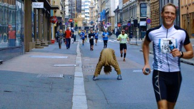
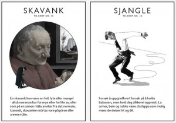

Kurs i Transporteringsdans med Martin Slaatto under Ravnedans (KRISTIANSAND)
- Kategori:
- Tverrfaglige kurs
Tverrfaglige kurs
Åpent for profesjonelle skuespillere og andre profesjonelle deltakere med spesifisert bakgrunn og erfaring. Se søknadsteksten for spesifikasjoner. Legg ved CV. - Dato:
- 25.07.2015 til 25.07.2015
- Start kl :
- 14:00
- Slutt kl :
- 00:00
- Pris:
- 100,-
- Adresse:
- Odderøya, Kristiansand
Ravnedans festival for samtidsdans og Norsk Skuespillersenter presenterer Transporteringsdans med Martin Slaatto på Odderøya lørdag 25. Juli!
{kind=link}
Påmelding ikke nødvendig, billetter kjøpes ved oppmøte eller via www.ravnedans.com
Om Transporteringsdans
Martin Slaatto har en kortstokk bestående av ulike bevegelser. Et kort sier “Opp-Ned” eller “Snurreri”, et annet “Hoppsasa”. Disse bestemmer hva slags bevegelsesmønstre du skal gjøre, og flere kan kombineres. Hva skjer om du trekker Jokeren?
Med Transporteringsdans kan du la deg utfordre fysisk, bryte litt med konformiteten og beskue hverdagen fra en litt annen vinkel. Det er både dans og trening - med en kunstnerisk tilnærming. Kurset passer for alle og legges under Ravnedans opp som en tur på i naturskjønne omgivelser på Odderøya nær Kristiansand sentrum. Transporteringsdans passer for både unge og gamle, i tillegg til at det kan brukes som praksis direktet knyttet opp mot scene og utøverativitet.
{kind=link}
Martin Slaatto har lenge vært aktiv som scenekunstner, og har siden 1998 presentert en rekke soloprosjekter med personlige og særegne temaer. Sist med prosjektet Jeg - en tedeist i Senter for transporteringsdans i Oslo. Et langvarig behov for nye innganger til bevegelsesarbeidet har resultert i utformingen av de 20 TD-kortene. På Ravnedans inviterer Martin alle med for å transportere seg selv fra A til B.
{kind=link}